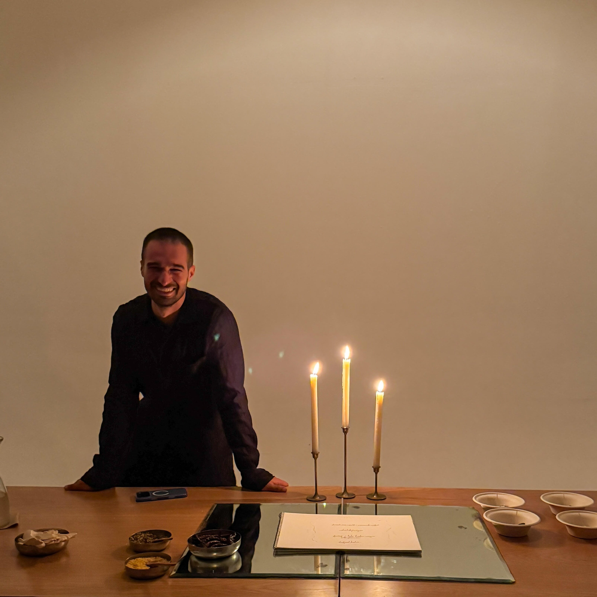
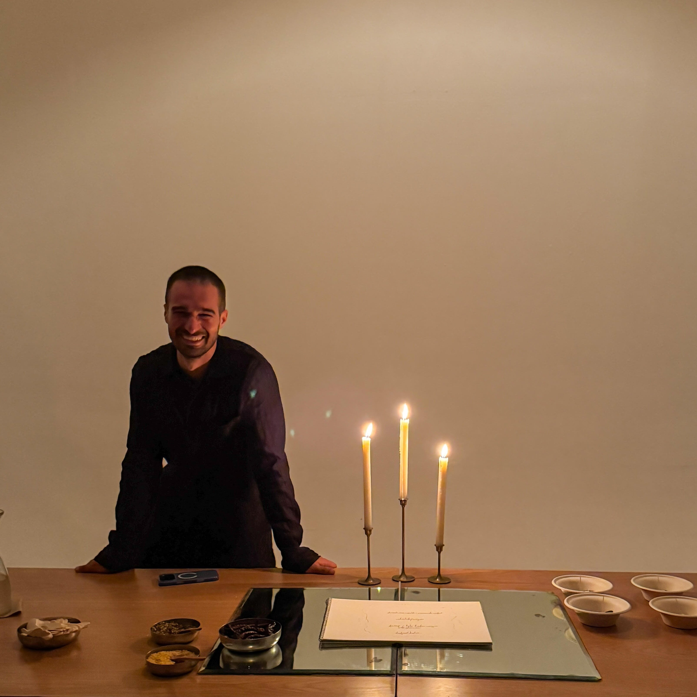

Mario Andres Rodriguez (b. 1997) is a curator, writer, and gallerist based in Miami, Florida. He started working as a gallery assistant in New Orleans while pursuing a bachelor’s degree at Tulane University. Since April 2024, he has co-owned and operated Supermarket Gallery, a nomadic art gallery focused on promoting local artists, emphasizing approachability in all its programming, and developing local connoisseurship for contemporary art.
Mario’s writing and curatorial practice focuses around artist first advocacy, finding lines of connection between artists of different backgrounds, and weaving artist’s practices into greater themes influencing diasporic cultures and people living along the Gulf Coast and Caribbean Sea.
After participating in Burnaway’s Art Writing Incubator in the summer of 2024, Mario has written exhibition reviews, artist interviews, and op-eds for publications like Too Much Love Magazine, Miami New Times, Burnaway, Artburst, and Slip Magazine. His curatorial work has been exhibited at The CAMP Gallery, MoCA Westport, The Goodtime Hotel, amongst other locations, and he has contributed curatorial texts for Bernice Steinbaum Gallery and The National Puerto Rican Museum.
 
